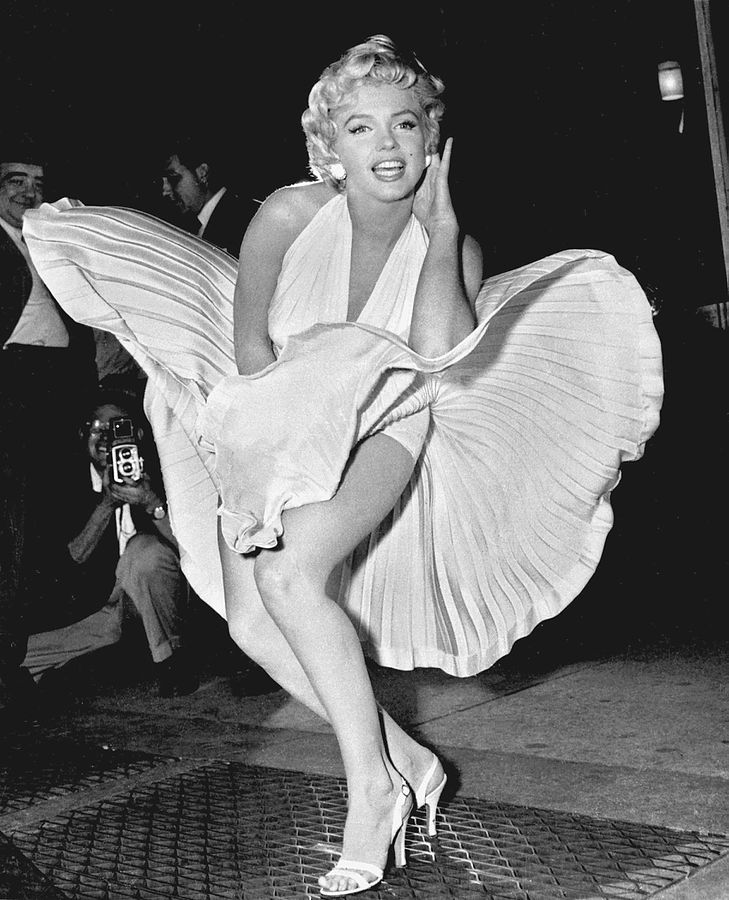

movies
- Dangerous Years (1947)
- Scudda Hoo! Scudda Hay! (1948)
- Ladies of the Chorus (1948)
- Love Happy (1949)
- A Ticket to Tomahawk (1950)
- The Asphalt Jungle (1950)
- All About Eve (1950)
- The Fireball (1950)
- Right Cross (1951)
- Home Town Story (1951)
- As Young as You Feel (1951)
- Love Nest (1951)
- Let's Make It Legal (1951)
- Clash by Night (1952)
- We're Not Married! (1952)
- Don't Bother to Knock (1952)
- Monkey Business (1952)
- O. Henry's Full House (1952)
- Niagara (1953)
- Gentlemen Prefer Blondes (1953)
- How to Marry a Millionaire (1953)
- River of No Return (1954)
- There's No Business Like Show Business (1954)
- The Seven Year Itch (1955)
- Bus Stop (1956)